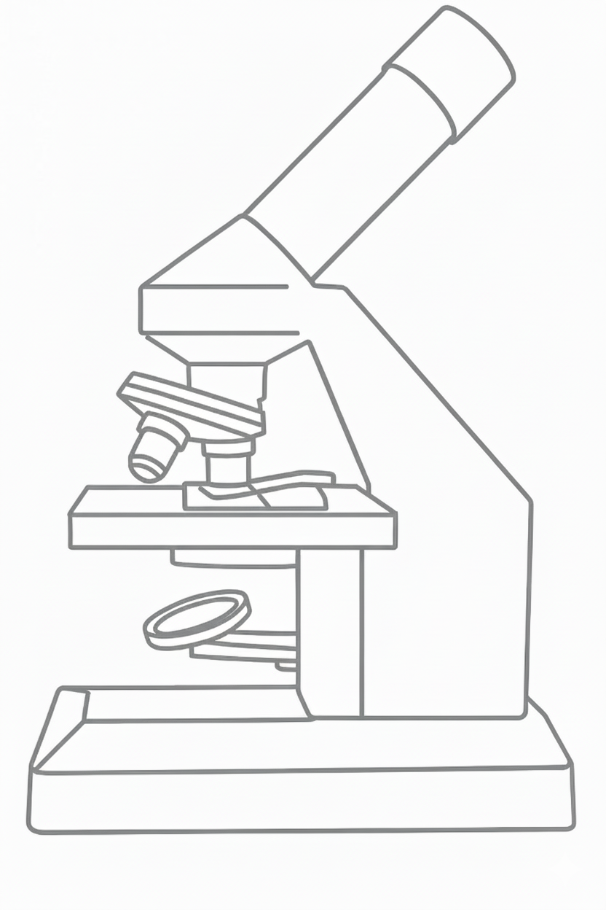

üî¨ Das Lichtmikroskop ‚Äî Aufbau und Funktion
Das Lichtmikroskop ist eines der wichtigsten Werkzeuge in der Biologie. …

Okular & Objektive
…
Grob- & Feintrieb
…
Beleuchtung
…
Grundprinzip der Mikroskopie
…
Aufgabe 1: Teile zuordnen

Aufgabe 2: Funktion & Bauteil
Okular
Objektiv
Objekttisch
Grobtrieb
Feintrieb
Lampe/Spiegel
Aufgabe 3: Reihenfolge beim Mikroskopieren
- Schritt 1Licht einstellen
- Schritt 2Objektträger auflegen
- Schritt 3Kleinste Vergrößerung wählen
- Schritt 4Mit Grobtrieb scharf stellen
- Schritt 5Mit Feintrieb nachfokussieren
- Schritt 6Bei Bedarf auf höheres Objektiv wechseln
Aufgabe 4: Sicherheit & Umgang
- APräparat niemals zerdrücken
- BGrobtrieb bei 40× verwenden
- CFeintrieb für scharfes Bild
- DLampe/Spiegel korrekt ausrichten
- EObjektträger gut fixieren
Aufgabe 5: Fokussieren & Beleuchtung (Spiel)
Regeln:
- Mit dem großen/kleinen Trieb drehen → Fokus einstellen.
- Revolver antippen → Objektiv wechseln (4×, 10×, 40×).
- Lampe antippen → Helligkeit durchschalten (70 % / 100 % / 130 %).

Objektiv: 4× (40×)
Grob: 0%
Fein: 50%
Licht: 100%
Vergleich: Mikroskoptypen
| Typ | Vorteile | Grenzen |
|---|---|---|
| Lichtmikroskop | Preiswert, live beobachten | Auflösung begrenzt (~200 nm) |
| REM | Hohe Auflösung/Oberflächen | Nur Vakuum/keine lebenden Proben |
| TEM | Ultrahochauflösung (innere Strukturen) | Aufwendige Präparation, 2D-Schnitte |